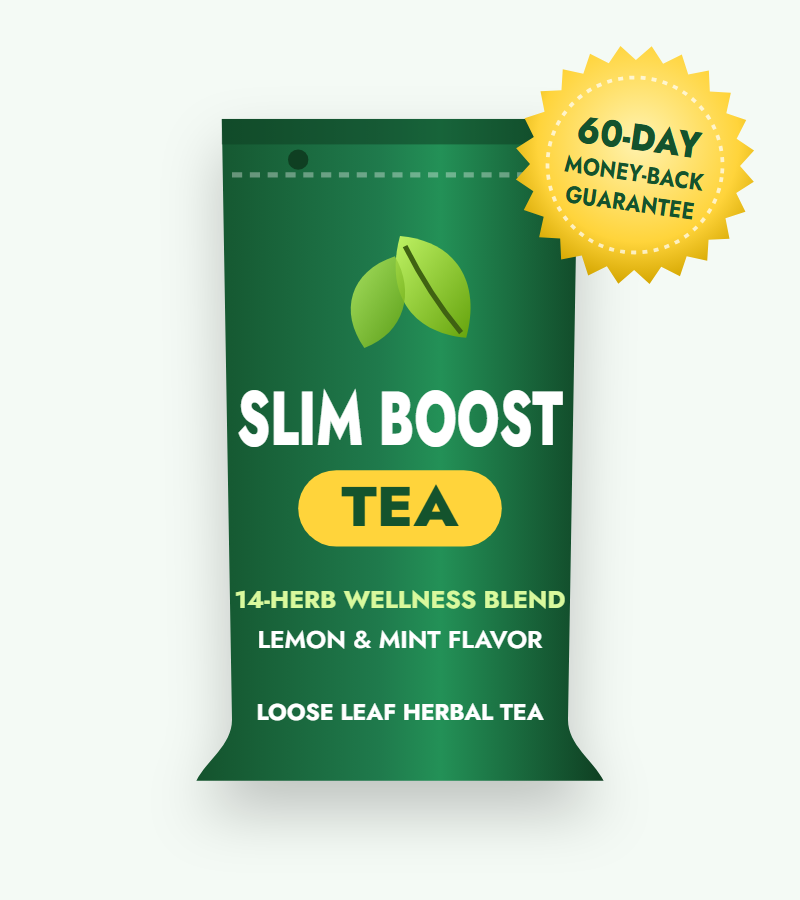
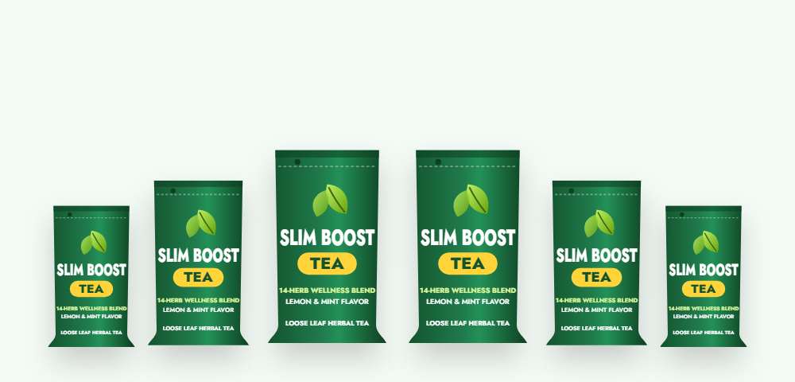

Metabolism
Green tea catechins (EGCG) and caffeine can slightly raise calorie burning and fat use — this is the COMT idea on the sales page.*
What's really in Slim Boost Tea, what a slimming tea can do for weight loss, and how to drink it safely

Slim Boost Tea is a lemon-and-mint herbal tea sold online as a fat-burning drink. Each bag holds a month's supply of a 14-herb blend built around green and oolong tea, with garcinia, ginseng, ginger and cinnamon — and one ingredient many buyers miss: senna leaf, a stimulant laxative.
Its sales page promises a "Nobel Prize-winning metabolism trigger" and weight loss of up to 78 pounds. In this Slim Boost Tea review we look at what the herbs can realistically do, explain why the senna matters, compare it with other slimming teas for weight loss, and cover the current price and how to order.
Slim Boost Tea is a blended herbal tea sold in bags, each of which is described as a one-month supply. Slim Boost Tea is flavored with natural lemon and mint and sweetened with monk fruit, a zero-calorie sweetener, so it can be drunk hot or iced without sugar.
The sales page — titled "Nobel Prize-Winning Metabolism Trigger Melts 78Lbs Naturally" — says the 14 herbs suppress the "C-O-M-T enzyme" to unlock fat burning. Testimonials describe losing 40 to 66 pounds, including one buyer who went "from 207 to 141 pounds in less than 2 months."
The real formula is a mix of genuine teas (green and oolong), digestion herbs (ginger, fennel, peppermint, lemongrass, dandelion) and a stimulant laxative (senna). Slim Boost Tea is best described as a slim tea with a laxative component, similar to many "detox" or "skinny" teas.
Slim Boost Tea is a food-type herbal product, not a weight loss medicine. The seller's own disclaimer says testimonials may not reflect typical results.
Green tea catechins (EGCG) and caffeine can slightly raise calorie burning and fat use — this is the COMT idea on the sales page.*
Garcinia, fennel, orange peel, ginger and cinnamon are included for fullness and sugar cravings.*
Peppermint, fennel and ginger ease digestion; dandelion is a mild diuretic and senna is a stimulant laxative.*
Only the first mechanism has meaningful research, and even there the effect is small — studies of green tea catechins show an average of roughly 1 to 1.5 kg (2–3 lb) extra weight loss over 12 weeks.
The third mechanism explains why slim teas can make the scale drop quickly: a laxative and a diuretic remove water and stool. That weight returns as soon as you stop, and it isn't fat loss.
The 14 herbs listed on the official Slim Boost Tea page, plus natural lemon and mint flavor. Amounts per cup are not given.
| Herb | What it is | What it does |
|---|---|---|
| Costa Rican green tea | Camellia sinensis leaf | Catechins and caffeine; small metabolism boost |
| Wuyi oolong tea | Partly oxidized tea | Caffeine and polyphenols; small metabolism boost |
| Garcinia cambogia | Tropical fruit rind (HCA) | Marketed for appetite; weak evidence |
| Lemongrass | Aromatic grass | Flavor, mild diuretic |
| Dandelion leaf | Leafy herb | Mild diuretic (water loss) |
| Korean ginseng root | Panax ginseng | Energy; may affect blood sugar |
| Senna leaf | Stimulant laxative | Bowel movements — not fat loss |
| Licorice root | Sweet root | Flavor; raises blood pressure with regular use |
| Peppermint | Mint leaf | Digestion, flavor |
| Orange peel | Citrus peel | Flavor, flavonoids |
| Ginger | Root spice | Digestion, nausea, slight thermogenesis |
| Fennel fruit | Seed spice | Bloating and gas relief |
| Monk fruit | Natural sweetener | Zero-calorie sweetness |
| Ceylon cinnamon bark | "True" cinnamon | Flavor; small blood sugar effects |
Ceylon cinnamon contains far less coumarin than cassia cinnamon, which is a plus for regular use.
Most Slim Boost Tea herbs are familiar kitchen-cupboard herbs that are safe in tea amounts. The two that need caution are senna (a laxative) and licorice root (which can raise blood pressure and lower potassium when used daily). Together, they can increase the risk of low potassium.
Our take: a pleasant, mostly gentle herbal blend with one ingredient — senna — that doesn't belong in a drink promoted for daily weight loss.
Senna is the active ingredient in many over-the-counter laxatives. It works by irritating the lining of the bowel so it contracts more strongly. In Slim Boost Tea, it produces more frequent or looser bowel movements — which can look like results on the scale.
Over-the-counter senna products are labeled for short-term use — typically no more than a week without medical advice. A tea promoted for months of daily drinking, with testimonials of four to six cups a day, goes well beyond that.
If you choose to drink Slim Boost Tea, have no more than one cup of Slim Boost Tea a day, take regular breaks, drink extra water, and stop if you get cramps or diarrhea. If constipation is your real problem, fiber, fluids and movement are better first steps.
| Ingredient | Studied amount | Evidence for weight loss |
|---|---|---|
| Green tea catechins + caffeine | ~270–1,200 mg catechins a day | Small: about 1–1.5 kg over 12 weeks in reviews |
| Oolong tea | 2–4 cups a day | A few small studies; slight increase in energy use |
| Garcinia cambogia (HCA) | 1–3 g HCA a day | Reviews: little or no clinically meaningful effect |
| Ginger | 1–2 g a day | Small effects on appetite and body weight |
| Ginseng | Various | Inconsistent results |
| Senna / dandelion | — | Water and stool loss only; no fat loss |
Research on slimming tea for weight loss points the same way again and again: green and oolong tea have a small, real effect; the other herbs have little; and laxative or diuretic herbs make the scale move without touching body fat.
A cup of Slim Boost Tea, brewed from a blend, contains far less catechin than the concentrated extracts used in most studies, so expect an even smaller effect.
The weight loss testimonials on the sales page — such as dropping 66 pounds in under two months — are well beyond anything shown for any tea and can't be verified.
| Tea | Main compounds | Contains laxative? | Typical cost |
|---|---|---|---|
| Slim Boost Tea | Green + oolong tea, 12 other herbs | Yes (senna) | $39–$59 a month |
| Plain green tea | EGCG catechins, caffeine | No | $5–$10 a month |
| Oolong tea | Polyphenols, caffeine | No | $8–$15 a month |
| Matcha | High catechins (whole leaf) | No | $15–$30 a month |
| Ginger or peppermint tea | Digestive compounds | No | $5 a month |
| "Detox" / slim tea brands | Often senna, cascara or diuretics | Usually | $20–$60 a month |
If your goal is a weight loss tea for daily use, plain green tea, oolong or matcha offer the best-studied compounds without a laxative, at a fraction of the price. Slim Boost Tea's advantage is flavor and convenience: it's pre-blended, lightly sweet and pleasant iced.
"Slim tea," "slimming tea" and "detox tea" aren't regulated terms, so it pays to read the ingredient list. Here's a quick checklist for any weight loss tea, including Slim Boost Tea:
Also beware of social-media "skinny teas" sold with unrealistic before-and-after photos. Regulators have warned several brands for misleading claims.
Realistic benefits of drinking this slim tea in moderation.*
Replacing soda or sweet coffee drinks with an unsweetened tea saves real calories.
Green and oolong tea provide caffeine and catechins.*
Peppermint, ginger and fennel can ease bloating after meals.*
Tea catechins slightly raise calorie burning.*
For lasting results, combine Slim Boost Tea or any other tea with a calorie-aware diet rich in protein and vegetables, regular activity and good sleep.
Most of the herbs in Slim Boost Tea are safe as occasional beverages, and Slim Boost Tea is not a medicine. The risks come from the laxative and licorice, and from drinking several cups every day.
Slim Boost Tea is a flavorful herbal blend with a small genuine benefit from its green and oolong tea — and a laxative that inflates results on the scale. It won't melt fat, and drinking several cups a day for months isn't something we'd recommend.
If you enjoy the taste of Slim Boost Tea and drink one cup occasionally as a sugar-free swap, it's unlikely to cause problems for a healthy adult. For a daily weight loss tea, plain green tea, oolong or matcha deliver the useful compounds without the risks, for much less money.
Visit the Slim Boost Tea Official WebsiteLosing 1–2 pounds a week is realistic and sustainable; extreme claims usually mean water loss.
They keep you full longer than any tea.
Liquid sugar is one of the easiest things to cut.
Muscle helps maintain your metabolism as you lose weight.
Short sleep and stress increase hunger hormones and cravings.
For larger amounts of weight, medical programs and modern medicines have strong evidence.
Slim Boost Tea is sold through its own order page; look-alike review and "official" sites, plus unrelated slim teas on marketplaces, also appear in search results. To get the real product and the guarantee:
Each Slim Boost Tea bag is a one-month supply, covered by the 60-day money-back guarantee.
1-Month Supply · Sample
$59/bag
No bonuses
6-Month Supply
$39/bag
+ 2 free bonus guides
3-Month Supply
$49/bag
+ 2 free bonus guides
Prices checked on the official page on October 18, 2026 and may change; the page shows a "regular price" of $99 per bag. Bonuses: "Yummy Fat Loss Desserts" cookbook and videos and "The Anti-Aging Blueprint" e-book. One-time payment.

Every Slim Boost Tea order is covered by a 60-day money-back guarantee. The seller says that if you're not happy at any time within 60 days, you can ask for a full refund, no questions asked.
Use the contact or refund page linked in the footer of the official Slim Boost Tea site, and start well before the 60 days are up.
Try Slim Boost Tea Risk-FreeSlim Boost Tea is an herbal tea sold for weight loss. Each bag is a one-month supply of 14 herbs — green tea, Wuyi oolong tea, garcinia cambogia, lemongrass, dandelion leaf, Korean ginseng, senna leaf, licorice root, peppermint, orange peel, ginger, fennel, monk fruit and Ceylon cinnamon — with natural lemon and mint flavor.
Green and oolong tea can slightly increase calorie burning, and swapping sugary drinks for an unsweetened tea saves calories. But there are no studies on Slim Boost Tea itself, and claims such as losing 21 pounds a month are not realistic. Much of any quick drop on the scale is likely to be water and stool from the senna.
Yes. Senna leaf is a stimulant laxative used in over-the-counter constipation products. It can cause cramps, diarrhea and loss of fluids and potassium, and it isn't meant for daily long-term use.
Because it contains senna and licorice root, daily use for weeks at a time isn't advisable. If you drink it, keep it to one cup a day, take breaks, stay hydrated and stop if you get cramps or diarrhea. Talk to a doctor first if you have heart, kidney or bowel problems or take medication.
On the official page Slim Boost Tea costs $59 for one bag plus shipping, $49 per bag for three bags ($147) and $39 per bag for six bags ($234 with free shipping). The 3- and 6-month packages include two free bonus guides.
It contains some useful teas, but the senna makes it more of a laxative "detox" blend than an ideal everyday slimming tea for weight loss. Plain green or oolong tea gives you the main metabolism-related compounds without the laxative.
Yes. Green tea and oolong tea naturally contain caffeine — usually less than coffee per cup — so avoid drinking it late in the day if you are sensitive.
The sales page links its "metabolism trigger" to a Nobel Prize, but there is no Nobel Prize for Slim Boost Tea or its ingredients. The page's COMT enzyme idea comes from small studies on green tea catechins, which have only a minor effect on fat burning.
Skip it if you are pregnant or breastfeeding, under 18, have inflammatory bowel disease, kidney or heart disease, high blood pressure or low potassium, or take diuretics, heart medicine such as digoxin, blood thinners or diabetes medicine — unless your doctor approves.
No. Slim Boost Tea is sold as a one-time purchase of 1, 3 or 6 bags.
Slim Boost Tea has a 60-day money-back guarantee. Contact the seller within 60 days of purchase for a refund if you are not satisfied.
Unsweetened green tea and oolong tea have the most research, and their effect on weight is small. The bigger benefit of any weight loss tea is replacing sugary drinks. Teas with senna or other laxatives are not recommended for weight loss.
Get Slim Boost Tea for as little as $39 per bag with free shipping on the 6-month package, plus two free bonus guides and a 60-day money-back guarantee. Drink it in moderation because of the senna.
Order Slim Boost Tea Now